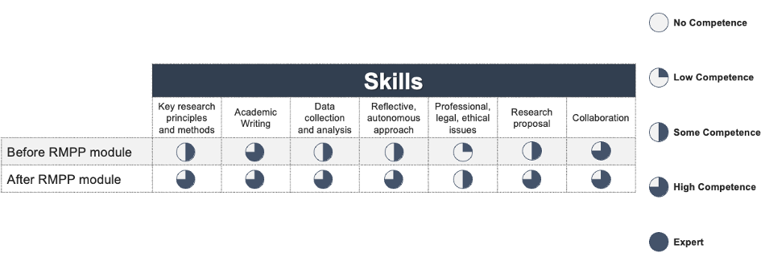

Reflections on Research Methods and Professional Practice

In this reflective piece, I summarise my lessons learnt and insights from the “Research Methods and Professional Practice” module, which I undertook during my Master’s degree course in Computer Science at the University of Essex. Furthermore, I outline how I improved my knowledge and skills in both qualitative and quantitative research, as well as the associated ethics. I also had the chance to discuss two research ethics-related case studies with my peers (Gray et al., 2018; Navalta et al., 2019), thus being able to appreciate how ensuring informed consent and safeguarding users’ data privacy (Atlam & Wills, 2020), as well as reporting data and results from research accurately (Navalta et al., 2019) are of paramount importance from professional, legal, ethical, and social standpoints. I also had the chance to revise the Agile methodology (Fowler & Highsmith, 2001), in particular Scrum for aiding software development (Garcia et al., 2022), and the Delphi technique for risk management (Nasa et al., 2021). Furthermore, I enhanced my soft skills, such as creativity, critical thinking, problem solving, project and time management, and presentation.
I leveraged the nursing-related methodology of Rolfe et al. (2001) to ensure a logical narrative for my reflections. This process was required considering that project management typically lacks a structured approach to articulate, except for a verbal retrospective in Scrum (Fowler & Highsmith, 2001).
I uploaded artefacts for each unit on GitHub at this link, which include my posts during two collaborative discussions, i.e., initial and summary posts, and peer responses, as well as my two assignments (literature review and research proposal presentation) and various activities performed throughout the module, such as all statistics-related exercises for unit 8 at this link and those for unit 9 at this link. After carrying out the literature review and receiving the tutor’s expert feedback, I learnt that the activity of performing a critical analysis of relevant literature (Elsbach & van Knippenberg, 2020) was not straightforward and involved thoroughly assessing pros and cons of related research works to identify knowledge gaps to fill. If I were to write a literature review again, I would not only create an outline but also a storyboard with brief sentences or bullet points (Dong et al., 2019), as well as draft charts (figures and tables), articulating the key messages sought to be conveyed for each section to ensure quality and focus of its content.
Further to seeing the tutor’s evaluation of my research proposal evaluation, I learnt to appreciate the importance of a clear, concise, and effective oral delivery to ensure the key takeaway messages are articulated such that they are understood quickly and valued. Next time, I would enhance the level of engagement of the presentation by providing more dynamic examples that illustrate the descriptive concepts that are discussed to support the research proposal.
Thanks to the tutorial-like examples and exercises regarding statistics during this module, I was able to revisit known statistical concepts and tests, and enhance my skills in interpreting their results and articulating their conclusions in a non-technical, understandable manner. I particularly enjoyed the activities on testing the assumptions of statistical tests to discern which test was more suitable for a particular dataset and scenario. Furthermore, visualising the insights from the statistical tests in a user-understandable manner to highlight certain patterns discovered in the data and compare them with the quantitative outcomes from the tests was pivotal to ensure a practical, tangible translation of research findings. I also had the chance to practise on quantitative and conclusive research methods (Humaidi et al., 2020) that I applied to create a compelling research proposal that was anchored on quantitative findings illustrated in the literature review-related assignment preceding it.
Being able to learn and understand the applicability of qualitative and quantitative research methods (Kuehn & Rohlfing, 2022), as well as inductive and deductive approaches, was key to equip me with tools to leverage at the workplace to select the appropriate methodology for the use case and data collection techniques considered. The tutor’s feedback on my literature review was useful to understand the critical aspects to fine tune to ensure the knowledge gaps highlighted are further motivated and discussed regarding how to fill them in a concise manner (Elsbach & van Knippenberg, 2020). The tutor also helped me improve my oral delivery in presentations, thus ensuring more clear and concise messages that can be understood more quickly and, thus, appreciated by a broader audience (Waluyo & Rofiah, 2021). Emotionally, I felt like I could trust the tutor because she followed swiftly on our submissions and provided candid feedback for us to leverage to truly enhance our relevant skillset to this module (Weltman et al., 2019). Because she made me feel at ease throughout this module (Weltman et al., 2019), I was able to leverage her feedback to improve upon my soft and technical skills by leveraging each assessment as a springboard to practise on the areas of development that were highlighted along the way. In future, I would continue to pay close attention at the feedback provided by both peers and supervisors or tutors to ensure I become more well-rounded as a person and as a professional, thus leveraging not only technical, research skills, but also deepening my ethics-related awareness and foundations to be a more competent and solid professional.
To assess the extent of improvement in my skills related to this module on Research Methods and Professional Practice quantitatively, please view my skills matrix on Fig. 1..
Figure 1. My overall higher competence across the skills related to the ‘Research Methods and Professional Practice’ module.
References
Atlam, H. F., & Wills, G. B. (2020) IoT security, privacy, safety and ethics. Digital twin technologies and smart cities 123-149.
Dong, A., Zeng, W., Chen, X., & Cheng, Z. (2019) VIStory: Interactive storyboard for exploring visual information in scientific publications. In Proceedings of the 12th International Symposium on Visual Information Communication and Interaction (pp. 1-8).
Elsbach, K. D., & van Knippenberg, D. (2020) Creating high‐impact literature reviews: An argument for ‘integrative reviews’. Journal of Management Studies 57(6): 1277-1289.
Fowler, M., & Highsmith, J. (2001) The agile manifesto. Software development 9(8): 28-35.
Garcia, L. A., OliveiraJr, E., & Morandini, M. (2022) Tailoring the Scrum framework for software development: Literature mapping and feature-based support. Information and Software Technology 146: 106814.
Gray, C. M., Kou, Y., Battles, B., Hoggatt, J., & Toombs, A. L. (2018) The dark (patterns) side of UX design. In Proceedings of the 2018 CHI conference on human factors in computing systems (pp. 1-14).
Humaidi, A., Khoirudin, M., Adinda, A. R., & Kautsar, A. (2020) The effect of financial technology, demography, and financial literacy on financial management behavior of productive age in Surabaya, Indonesia. International Journal of Advances in Scientific Research and Engineering 6(01): 77-81.
Kuehn, D., & Rohlfing, I. (2022) Do Quantitative and Qualitative Research Reflect two Distinct Cultures? An Empirical Analysis of 180 Articles Suggests “no”. Sociological Methods & Research, 00491241221082597.
Nasa, P., Jain, R., & Juneja, D. (2021). Delphi methodology in healthcare research: how to decide its appropriateness. World Journal of Methodology, 11(4), 116.
Navalta, J. W., Stone, W. J., & Lyons, S. (2019) Ethical issues relating to scientific discovery in exercise science. International journal of exercise science 12(1): 1.
Rolfe, G., Freshwater, D. & Jasper, M. (2001) Critical reflection in nursing and the helping professions: a user’s guide. Basingstoke: Palgrave Macmillan.
Waluyo, B., & Rofiah, N. L. (2021) Developing Students' English Oral Presentation Skills: Do Self-Confidence, Teacher Feedback, and English Proficiency Matter?. Mextesol Journal 45(3): n3.
Weltman, H. R., Timchenko, V., Sofios, H. E., Ayres, P., & Marcus, N. (2019) Evaluation of an adaptive tutorial supporting the teaching of mathematics. European Journal of Engineering Education 44(5): 787-804.